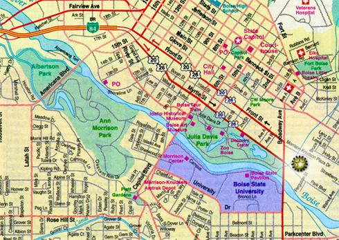

If this map is too small you can click on it to see a larger version. Once you've figured out how to get to the Morrison Knudsen Complex (under the U.I. logo) you can view a map of the complex itself to determine which building we're in. Important: the map I scanned reversed the traffic flow on Front and Myrtle. Each is actually one-way in the opposite of the direction indicated by the black arrows. The red arrows are correct.
